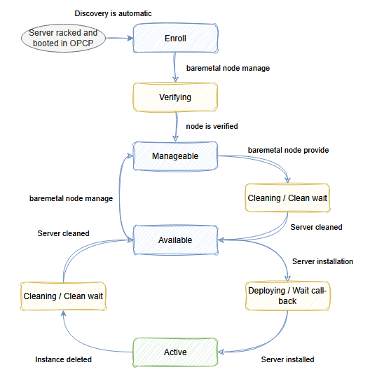

Cycle de Vie des Nœuds
IntermédiaireComprendre le Cycle de Vie d'un Nœud
Dans OPCP, un nœud représente la configuration d'un serveur physique (bare metal) dans la baie OPCP, géré par OpenStack Ironic. Les nœuds sont différents des instances — une instance représente le système d'exploitation déployé sur un nœud.
La découverte des nœuds est automatique : lorsqu'un serveur physique démarre dans la baie, le plan de contrôle OPCP découvre automatiquement ses propriétés matérielles et ses caractéristiques. Comprendre les états des nœuds vous aide à gérer efficacement votre infrastructure bare metal.
Référence : Documentation OVHcloud OPCP — Cycle de vie des nœuds
Les États du Cycle de Vie en un Coup d'Œil

États des Nœuds
Chaque nœud passe par une série d'états au cours de son cycle de vie. Voici les états principaux :
| État | Description |
|---|---|
| Enroll | Premier état lorsqu'un nœud est auto-découvert par OPCP. Pas encore vérifié. Doit être déplacé manuellement vers Manageable. |
| Verifying | État transitoire de Enroll vers Manageable. Ironic vérifie qu'il peut gérer le nœud. |
| Manageable | Le nœud est vérifié et géré par Ironic, mais pas encore prêt pour l'installation. Doit être déplacé vers Available. |
| Available | Le nœud est prêt à recevoir une instance. |
| Deploying / Wait call-back | État transitoire pendant l'installation d'une instance sur le nœud. |
| Active | Le nœud a une instance active en cours d'exécution. C'est l'état opérationnel normal. |
| Cleaning / Clean-wait | État transitoire lorsqu'une instance est supprimée ou que le nœud quitte Manageable. Les disques sont formatés durant cette phase. |
Transitions d'États
Les nœuds progressent entre les états via des opérations spécifiques :
Enroll → Manageable
Après la découverte automatique d'un nœud, un administrateur doit explicitement le déplacer vers l'état Manageable. Pendant cette transition, le nœud entre dans l'état Verifying où Ironic confirme qu'il peut gérer le matériel.
openstack baremetal node manage $NODE_IDManageable → Available
Une fois vérifié, le nœud doit être rendu disponible pour l'installation. Durant cette transition, une phase de Cleaning peut se produire où les disques sont formatés.
openstack baremetal node provide $NODE_IDAvailable → Active
Lorsqu'une instance est déployée sur le nœud, il transite par Deploying / Wait call-back puis atteint l'état Active.
Active → Available
Lorsqu'une instance est supprimée, le nœud passe par l'état Cleaning (les disques sont formatés) et revient à Available.
Mode Maintenance
Tout nœud peut être placé en mode maintenance pour empêcher toute opération sur celui-ci. C'est utile pour le dépannage matériel ou les interventions planifiées.
Activer le Mode Maintenance
openstack baremetal node maintenance set $NODE_ID --reason "Inspection matérielle requise"Quitter le Mode Maintenance
openstack baremetal node maintenance unset $NODE_IDSurveillance de l'État des Nœuds
Vous pouvez vérifier l'état de vos nœuds par deux méthodes :
Via le Tableau de Bord Horizon
Naviguez vers Admin > Système > Ironic Bare Metal Provisioning pour voir l'état actuel de tous les nœuds.
Via CLI
# Lister tous les nœuds et leurs états
openstack baremetal node list
# Afficher les informations détaillées d'un nœud spécifique
openstack baremetal node show $NODE_IDDécouverte Automatique des Nœuds
Lorsqu'un nouveau serveur physique démarre dans la baie OPCP, le plan de contrôle automatiquement :
- Détecte le serveur via le réseau de gestion OOB (Out-of-Band)
- Découvre les propriétés matérielles (CPU, RAM, stockage, interfaces réseau)
- Identifie les traits et capacités matérielles
- Enregistre le nœud dans l'état Enroll
Aucun enregistrement manuel n'est nécessaire — la plateforme gère la découverte automatiquement.
Points Clés à Retenir
- Un nœud représente la configuration d'un serveur physique, distinct de l'instance (OS) qui s'exécute dessus
- La découverte des nœuds est automatique lorsque le matériel démarre dans la baie
- Le cycle de vie suit : Enroll → Verifying → Manageable → Available → Deploying → Active
- Le nettoyage (Cleaning) se produit lors de la suppression d'instances (les disques sont formatés)
- Le mode maintenance peut être activé sur n'importe quel nœud pour empêcher les opérations
- L'état peut être surveillé via Horizon (Admin > Système > Ironic) ou en CLI